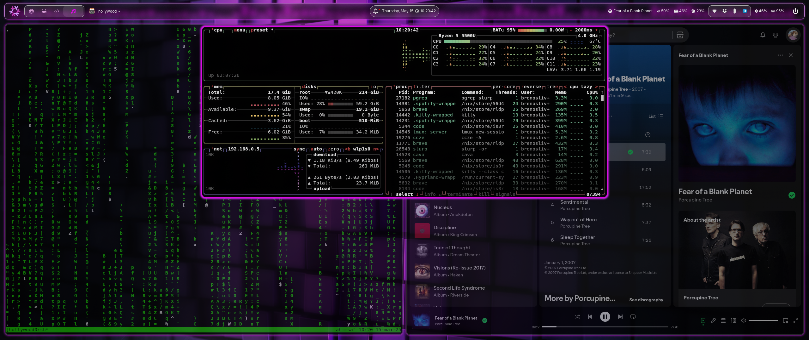

Frequently Asked Questions
In this case, "frequently" assumes questions that most people would ask when accessing this website.Why did you create this website?
Unfortunately, as a researcher, it is important to expose yourself in some way to share our work. A platform such as a website or social media will inevitably be used to accomplish this.
Do you have any social media?
No (if you exclude LinkedIn). This website will be hard enough to update through the years, and I am particularly not very fond of social media.
Where can I contact you?
The upper right portion of this website contains all my contact information, such as LinkedIn and e-mail.
Why the hell are the colors on this website like this?
I like shades of purple, and my Linux desktop also looks like this website, as you can see:

Wow, what Linux distro do you use?
NixOS with Hyprland. NixOS is a declarative distro (which I love it). My configuration files, if you want your NixOS to look like this, can be found in this GitHub repository.